Definición
Árboles dirigidos o diarboles
Un dígrafo conexo D que posee circuitos ni semicircuitos se llama un arbol dirigido o diarbol.
La figura 1 muestra un diarbol T.
Figura 1.
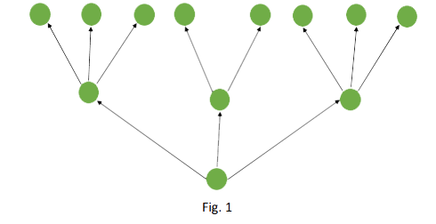
Características de los diarboles
Los diarboles son de gran importancia en muchas aplicaciones tales como análisis de redes eléctricas, teoría de juego, teoría de lenguaje y programación de computadoras. Las propiedades dadas para los árboles son válidas también para los diarboles, teniendo en cuenta la dirección de los arcos.
Una clase de diarboles que merece mención por su utilidad son las llamadas arborescencia que continuación definimos:
Un diarbol T se llama arborescencia si:
- En T existe un único vértice Vr tal que g-(Vr)=0 y b) Para cualquier otro vértice V,g-(V)=1, el vértice Vr se llama la raíz de la arborescencia.
Figura 2.
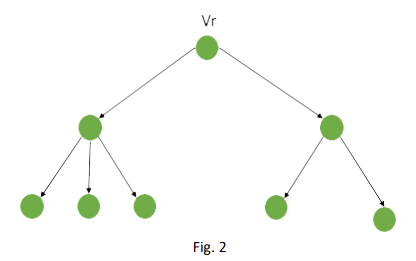
Teorema 1.
Un dígrafo T es una arborescencia si y solo si todo vértice es accesible desde la raíz y esta no es accesible desde ningún vértice.
Demostración: sea T una arborescencia y sea Vr la raíz de T. sea C un camino en T cuyo vértice inicial es Vr, C puede ser extendido hasta llegar a un vértice pendiente, porque de otra forma en T existiría algún vértice V con g- (V) > 1. Lo cual es una contradicción.
Como T es un dígrafo conexo, todo vértice V se encuentra en algún camino con vértice inicial Vr y con vértice terminal un vértice pendiente. Supongamos que T es un diarbol en el que todo vértice es accesible desde la raíz Vr y Vr no es accesible desde ningún vértice de T entonce:
- El grado negativo de cualquier vertice V ≠ Vr es al menos 1, esto es g- (V) ≥ 1, pero como |A(T)| = n – 1 (siendo n = |V(T)| ) y ∑𝑔 − 𝑛 𝑖=1 (𝑉𝑖) = 𝑛 – 1, es decir, la suma de los grados negativos de los vértices es igual al número de arcos, entonces g – (Vi) = 1 para i = 1, … n. esto significa que todos los vértices diferentes de la raíz Vr tien grafo negativo 1 y
- Como Vr no es accesible desde ningún otro vértice, entonces g- (Vr) = 0. Luego T es una arborescencia.
1. Arborescencia T.
Se llama arborescencia binaria si el grado positivo de todo vértice no pendiente es 2 (Figura. 3).
Figura 3.
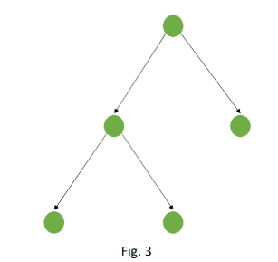
2. Ordenamiento transversales de arborescencias.
Sea T una arborescencia. Un ordenamiento transversal de T es un orden de su conjunto de vértice V(T), tal que dados dos vértices Vi y Vj de V(T) se tiene:
- Si r -(Vi) = r -(Vj) entonces [ o Vi esta relacionado con Vj, Vi Vj, o Vj esta relacionado con Vi, Vj Vi]
- Si r -(Vi) ≠ r -(Vj) entonces no esta relacionado con Vj, Vi Vj
Esto significa que un ordenamiento transversal origina un ordenamiento total en el conjunto de sucesores de cada vértice de T
Ejemplo:
Consideremos la arborescencia de la figura. 4 el ordenamiento transversal de esta.
Figura 4.
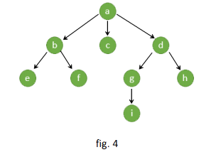
Arborescencia se obtiene observando que r-(b)=r-(c)=r-(a) por lo tanto b o d;r-(e)=r-(f)=r-(b) entonces e f;r-(g)=r-(h)={d} entonces g h.
3. Orden de Tarry y orden reverso de Tarry.
Dado un ordenamiento transversal de una arborescencia T, podemos construir un ordenamiento total 𝛼 de V(T) que es compatible con, en el que para todo par de vértices Vj, Vi ∈ V(T), con Vi Vj, también se tiene que Vi 𝛼 Vj. Un ordenamiento total se puede dar de diferentes formas. Una de tales formas es el ordenamiento de terry.
Un ordenamiento total o se llama un orden de Tarry, si para todo par de vértices Vi,Vj ∈V(T), se cumple:
- Si Vi es un ascendente de Vj, entonces Vi o Vj y
- Si Vi Vj, entonces para todo Vi ∈ r +(Vi) y todo Vj ∈ r-(Vj) Vi o Vj
Si en la condición (A) cambiamos ascendente por descendente obtenemos otro ordenamiento total de V(T) llamado ordenamiento reverso de Tarry. Dada una arborescencia, estos ordenamientos se pueden realizar de acuerdo a la siguiente regla:
Partimos de la raíz y recorremos el resto de vértices. Sea Vi un vértice alcanzado en el recorrido. Si vi tiene algún sucesor que no ha sido alcanzado todavía, procedemos hacerlo (teniendo en cuenta el ordenamiento transversal). Si no queda ningún sucesor de vi que no haya sido alcanzado, regresamos al predecesor de Vi y repetiremos el proceso anterior hasta haber agotado todos los sucesores regresaremos a la raíz. Aquí termina el proceso.Entonces el orden de tarry (o el orden reverso de tarry) es el orden en el cual todos los vértices son alcanzados en el recorrido del árbol.
Para la arborescencia de la figura 2 tenemos el siguiente orden de tarry y orden reverso respectivamente.
Entonces en el ordenamiento de tarry los vértices aparecen en el siguiente orden: a b e f c d g i h y en el ordenamiento reverso el orden es: e f b c i g b d a.
Figura 5.
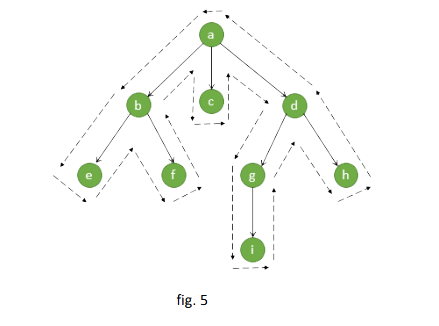
4. Orden simétrico.
Sea T una arborescencia binaria con un ordenamiento transversal. Otro ejemplo de orden total sobre V(T) el cual es compatible con el orden simétrico T definido en la siguiente forma: si Vk es un vértice no pendiente de V(T) que tiene como sucesores Vi y Vj con Vi Vj, entonces:
-
Vi T Vk para todo vértice Vi ∈ r+(Vi) y
-
Vk T Vj para todo vértice Vj ∈ r+(Vj)
Figura 6.
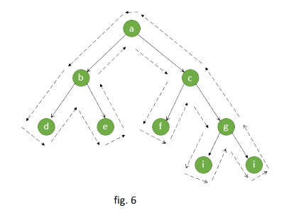
El orden transversal en:
b≤c, d≤e, f≤g y h≤i
Y la lista de los vértices de acuerdo al orden simétrico es: d b e a f c h g i.
El orden simétrico de una arborescencia binaria se obtiene fácilmente recorriendo el árbol en la manera descrita anteriormente y listamos los vértices en el orden en el que encontrados en el recorrido.
5. Ordenamiento lexicografico de un texto.
Supongamos que tenemos un texto escrito y se requiere una lista de las palabras que aparecen en el texto en el orden lexicográfico (orden en que aparecen en el diccionario). Una forma de resolver este problema se puede obtener examinando el texto desde el comienzo hasta el final e ir construyendo una arborescencia binaria y “ROTULADA” en la siguiente forma:
Inicialmente la arborescencia T consta de un solo vértice en el cual esta rotula con el símbolo #. Seguidamente cuando leemos cada palabra P del texto, recorremos la arborescencia partiendo de su raíz y aplicamos el siguiente algoritmo.
Paso 1. Sea Vp el vértice alcanzado y sea rp su rotulo. Si rp es el símbolo # vaya al paso 2: Si rp es una palabra lexicográficamente inferior a p (esta antes en el diccionario}. Vaya al paso 4:
Si rp es una palabra lexicográficamente superior a p vaya al paso 3; y si rp es una palabra p vaya al fin.
Paso 2. Reemplace el rotulo # de Vp per la palabra p. adicione dos nuevos vértices a la arborescencia un “sucesor izquierdo” y un “sucesor derecho" de Vp y rotulemos ambos con el símbolo #; entonces vaya a fin.
Paso 3. Avance al sucesor derecho de Vp, entonces repita el paso 1.
Paso 4. Avance al sucesor izquierdo de Vp, entonces repita el paso 1 Fin.
Como una ilustración, consideremos el siguiente texto:” La casa de mi hermano está lejos de aquí y es muy difícil tomar transporte para llegar allá“
Figura 7.
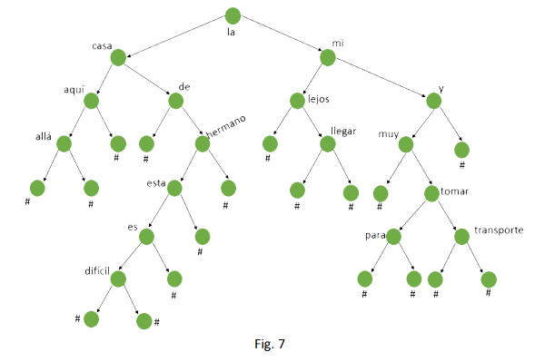
Si hacemos un ordenamiento simétrico de los vértices de la arborescencia binaria construida (recorriendo la arborescencia en la manera descrita previamente) y haciendo la lista da los rétulos de los vértices en este orden, obtenemos las palabras del texto en el orden lexicográfico, con el símbolo # delante y después de cada palabra. Para esta arborescencia tenemos:
# allá # aquí # casa # de # difícil # es # esta # hermano # la # lejos # llegar # mi # muy # para # tomar # transporte # y #
Las arborescencias binarias de ésta clase son usadas con frecuencia en compiladores. Para elaborar una lista (o diccionario) que de información acerca de las variables cuyos nombres aparecen en el texto de un programa.
6. Problema de la travesía del agente viajero (T.A.V).
Este problema se refiere a la siguiente situación: Dado un grafo pesado G se pide encontrar al ciclo de Hamilton o la cadena de Hamilton con mínimo peso.
Una aproximación a la solución de éste problema se puede obtener buscando una cota inferior, mediante el uso de árbol cobertor mínimo ( A.C.M) que fue hallado usando el algoritmo de kruskal en la siguiente forma:
Supongamos que la arista (xi, xj) está en el ciclo optimo que resuelve el problema T.A.V., si esta arista se suprime del ciclo, se obtiene una cadena simple con n-1 aristas que recorre todos los vértices de G desde xi hasta xj.
Como el árbol cobertor mínimo (su peso) es una cota inferior de esta cadena, el peso del árbol cobertor mínimo más p(xi, xj) es una cota inferior del peso del ciclo de Hamilton que resuelve el problema T.A.V.
En general ninguna arista (xi, xj) en el ciclo optimo será conocida, pero la arista de mayor peso en el ciclo debe ser al menos como el
Max{p(xi,S)}
Donde S es el segundo vértice más cercano a xi, esto es:
P(A.C.M)+max{(xi,S)}
Es una cota inferior valida al peso del ciclo que resuelve el problema de la T.A.V
Sea un grafo pesado con n vértices, dado un árbol cobertor T de G definimos la proximidad de Er del árbol T a una cadena de Hamilton por:
Er=∑((xi)-2) g(xi)>2
Donde g(x) es el grado del vértice x en T.
El mayor valor de E es la mayor desviación del árbol T desde una cadena de Hamilton. Resolvemos el problema de hallar la cadena de hamilton minima: es hallar un árbol cobertor mínimo T del grafo G tal que el grado de cada vértice no exceda a 2, esto es, si T es un árbol cobertor de un grafo G, para el cual el grado de sus vértices es menor o igual a 2, entonces T es una cadena de Hamilton.
Demostración: puesto que T es un árbol ninguno vértice tiene grado cero y por lo tanto en T g(xi)=1 o g(xi)=2 para todo i.
Sea p el número de vértices de grado 1 entonces n–p tienen grado 2, entonces el número de aristas de T es;
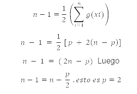
Por tanto, T posee dos vértices de grado 1, lo cual implica que es una cadena de Hamilton
Ejemplo:
Sea G un grafo completo con 6 vértices cuya matriz de pesos es la siguiente:
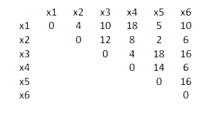
Encuentre la cadena de Hamilton con mínimo peso.
Solución:
Usando el algoritmo de Krukal, hallamos el A.C.H.
Figura 8.
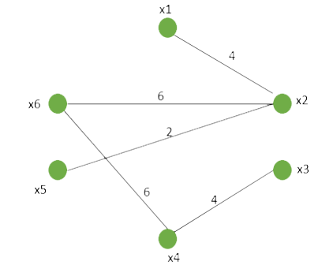
Llamemos este árbol Ta y p(Ta) = 22
Puesto que en Ta g(xi)=3, Ta no es una cadena Hamilton
Entonces una de las aristas (x1, x2), (x3, x6), (x2, x5) deben desaparecer en la solución final. La solución al problema original es una solución de al menos uno de los tres subproblemas representados en el árbol de decisión de la siguiente figura:
Figura 9.
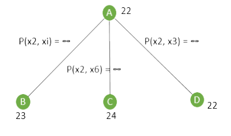
En este árbol el vértice A representa el problema original y los vértices B, C, y D representa los problemas cuyas matrices de pesos son las mismas que C, reemplazando los pesos de las aristas (x2, x1), (x2, x6), (x2, x5) por infinito.
Usando cada una de estas matrices C21, C26 y C25 hallamos los arboles cobertores Tb, Tc y Td respectivamente.
Figura 10.
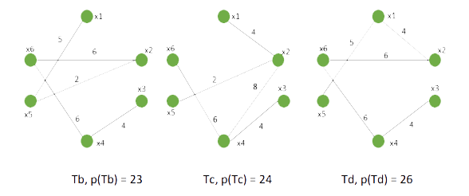
En el árbol de decisión el número próximo a cada vértice es el peso del árbol cobertor mínimo correspondiente al subproblema definido por el vértice. Se pueda notar que en alguna etapa en el árbol de decisión al menor peso de los vértices pendientes es una cota inferior del peso de la respuesta final.
En este ejercicio los arboles Tb y Td son cadenas de Hamilton. mientras el árbol Tc no lo es. La solución al problema es Tb . Una rama adicional desde Tc en el árbol de decisión no es necesaria puesto que cualquier cadena de Hamilton que resulte desde allá tendrá un peso al menos 24 que es mayor que 23.
Luego hemos hallado una respuesta optima a este problema particular aplicando solo 4 veces el algoritmo de Kruskal.
8. Árboles de decisión.
Cada vértice interno de un árbol de decisión representa una decisión, y los posibles resultados de la decisión, se representan por las aristas que conducen al siguiente nivel. El resultado final del proceso está representado por las hojas del árbol. Si el resultado de cada decisión es simplemente que una afirmación es cierta o es falsa, tenemos un árbol binario.